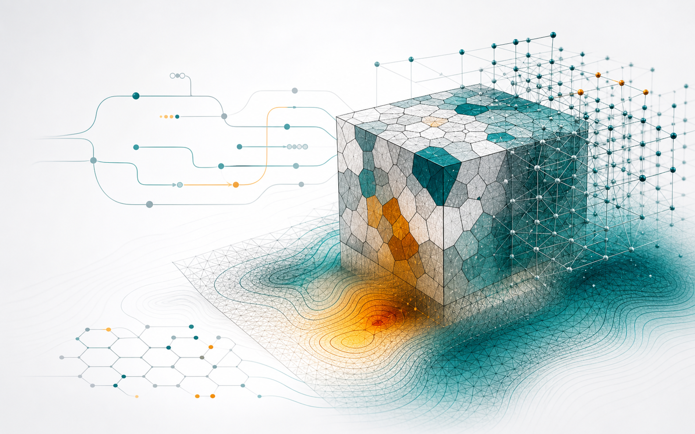

Specialist Setup Knowledge
Setting up multi-physics simulations requires deep domain expertise to define models, material parameters, boundary conditions, and validation steps correctly.
We build customized, ready-to-run DAMASK-based simulation workflows for multi-physics materials modelling, so your team can focus on innovation, not troubleshooting.
Built for materials R&D teams, simulation groups, metallurgists, and engineering organizations that need reliable workflows without building every step in-house.

As materials become more complex, more physics phenomena depend on each other. Understanding these interdependent phenomena through advanced multi-physics modelling is key to understanding and unlocking advanced material properties. However, implementing simulation workflows involving tools like DAMASK usually comes with steep hurdles.
Setting up multi-physics simulations requires deep domain expertise to define models, material parameters, boundary conditions, and validation steps correctly.
Connecting experimental data, microstructure generation, simulation runs, and post-processing into a reliable ICME workflow is difficult and time-consuming.
Multi-physics simulations are powerful, but computationally demanding and requires in-depth expert analyses to interpret.
We translate those challenges into customized DAMASK workflows that are structured, documented, and ready to run in our cloud or on your own infrastructure.
We build validated pipelines for your alloy system, material parameters, boundary conditions, geometry setup, simulation execution, and validation path.
Your team gets a documented workflow that can be reused, transferred across teams, and applied consistently across projects. Just run the workflow and start generating rich data.
We connect experimental inputs, microstructure or geometry generation, DAMASK runs, and post-processing outputs into one coherent workflow.
Your team avoids manual handoffs and can run repeatable simulations in the background.
We design practical run configurations, scaling approaches, and workflow shortcuts for your workstation, server, or cluster environment.
Your team reaches usable CP simulation results faster while preserving the modelling advantages.
The engagement is designed to reduce uncertainty before implementation and leave your team with a workflow they can actually operate.
01 (~1 week)
We review your material system, simulation goals, available data, and computing environment.
02 (~2 weeks)
We define the DAMASK workflow, inputs, automation steps, validation approach, and handover format.
03
You receive a ready-to-run cloudbased- or local workflow with documentation, example runs, and adoption support.
We are not just software developers; we are materials scientists and simulation experts with backgrounds in academia and industry. Our team includes DAMASK developers, which helps us connect the simulation world to real-world material science applications.
With broad experience across diverse multiphysics domains, we understand the physics behind the code. We translate complex material behavior into robust, reproducible digital workflows, giving your team PhD-level capabilities from day one.
Typical Deliverables
Automation scripts, configuration templates, documentation, example runs, and post-processing outputs.
Application Areas
Alloys, forming, microstructure-property links, thermo-mechanical coupling, and crystal plasticity studies.
Infrastructure Fit
Workflows can be configured for your own workstation, internal server, or cluster environment.
Share your current simulation challenge, material system, and infrastructure. We will identify where a custom DAMASK workflow could save time, reduce setup risk, or improve reproducibility.